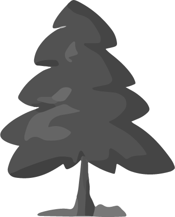
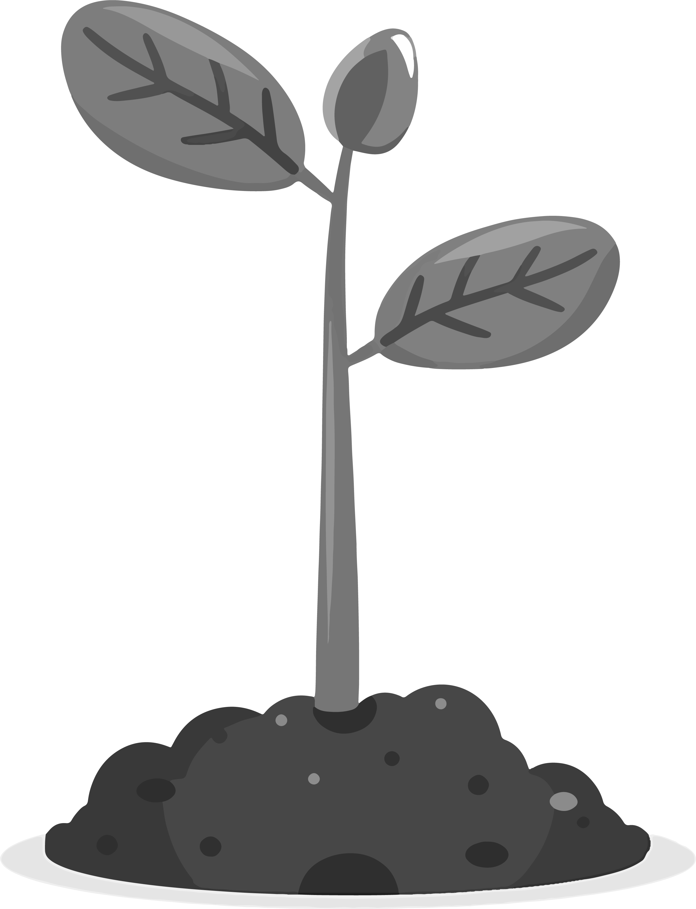

Vídeo del parque que ofrece una vista panorámica de 360º desde el punto de grabación.
Vídeo del parque con vista en 360º
Pertenecen al servicio de Parques y Jardines.
 Viveros Municipales
Se ocupan fundamentalmente de la gestión de:
Zonas verdes municipales | Zonas arboladas o bosques | Arbolado viario | Macizos de plantas de flor |
Jardineras tanto en dependencias municipales como en las calles.

Viveros

Arbolado

Pradera

Zona verde
Viveros Municipales
 Historia
Historia
El vivero abrió en 1992 y forma parte de los espacios que gestiona la contrata municipal de jardinería. Se encuentra ubicado en el parque
de Purificación Tomas. Éste parque tiene extensas praderas desde las que disfrutar de unas buenas vistas de la ciudad.
Viveros Municipales
 El refugio verde
Del vivero provienen todas las plantas que Parques y Jardines distribuye por todo el municipio de Oviedo.
No todas las plantas requieren el mismo cuidado. En el vivero se puede cuidar de más de 200.000 plantas de flor pequeña, 15.000 arbustos y 300 árboles.
Explora las Otras Zonas Verdes de Oviedo

Descubre tu refugio natural en Oviedo, explora los diversos oasis y remansos de paz que la ciudad tiene para ofrecer.
Al igual que en los parques, en estas zonas verdes podrás encontrar diferentes ACTIVIDADES
 Historia
Historia
El Parque de Purificación Tomás fue inaugurado en el año 1991 y está situado en una finca al oeste del Monte Naranco conocida como “Monte Altu”. Además de ser uno de los espacios verdes más conocidos de Oviedo, está rodeado (y nos permite disfrutar) de un entorno excepcional con unas vistas maravillosas del Naranco y de la Sierra del Aramo.
 Deporte
Deporte
El parque Purificación Tomás es uno de los lugares ideales de la ciudad para pasear, andar en bicicleta o realizar otras actividades al aire libre. Cuenta con canchas polideportivas, pista de voleibol y disc-golf, ésto lo convierte en una muy buena opción para hacer deporte o disfrutar en compañía de la familia.
 Naturaleza
Naturaleza
El Parque de Purificación Tomás tiene amplias y espaciosas zonas verdes. Las especies predominantes de árboles: Eucaliptos, Cedros, Piceas, Pinos, Abedules, Taxodium, Cerezos, Avellanos, Castaños, Robles, Chopos, Manzanos, Perales, Higueras y Nogales.
Historia

 Historia
Historia
El Parque de Purificación Tomás fue inaugurado en el año 1991 y está situado en una finca al oeste del Monte Naranco conocida como “Monte Altu”. Además de ser uno de los espacios verdes más conocidos de Oviedo, está rodeado (y nos permite disfrutar) de un entorno excepcional con unas vistas maravillosas del Naranco y de la Sierra del Aramo.
Deporte

 Deporte
Deporte
El parque Purificación Tomás es uno de los lugares ideales de la ciudad para pasear, andar en bicicleta o realizar otras actividades al aire libre, Cuenta con canchas polideportivas, pista de voleibol y disc-golf, lo que le convierte en una muy buena opción para hacer deporte o disfrutar en compañía de la familia.
Instalaciones del vivero necesarias para el mantenimiento del parque


En el invernadero
Santuario que protege del frío y del calor
 El umbráculo
El umbráculo
Donde se almacenan sobre
todo las plantas de flor que requieren cuidados antes de salir
a los macizos de la ciudad.
Para el cultivo de los arbustos y árboles pequeños
 Los bancales
Los bancales
Incluso para la recuperación de los abetos
que
recogía el Ayuntamiento al final de las Navidades.
Sobre Nosotros
Somos un equipo de desarrolladores web dedicados a crear experiencias únicas.
Nos
esforzamos por transformar la visita a los parques por excelencia de Oviedo en experiencias
digitales visualmente atractivas, intuitivas y fáciles de usar.
© Copyright 2025.
Todos los derechos reservados.